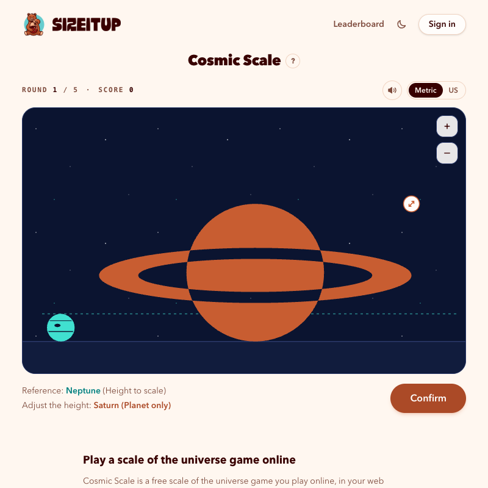
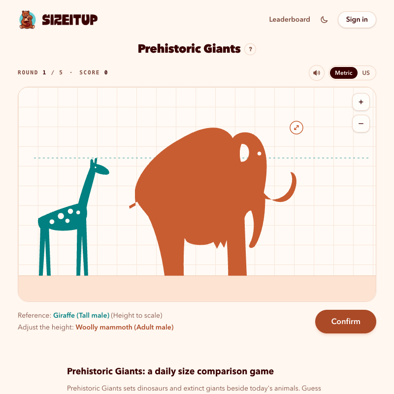
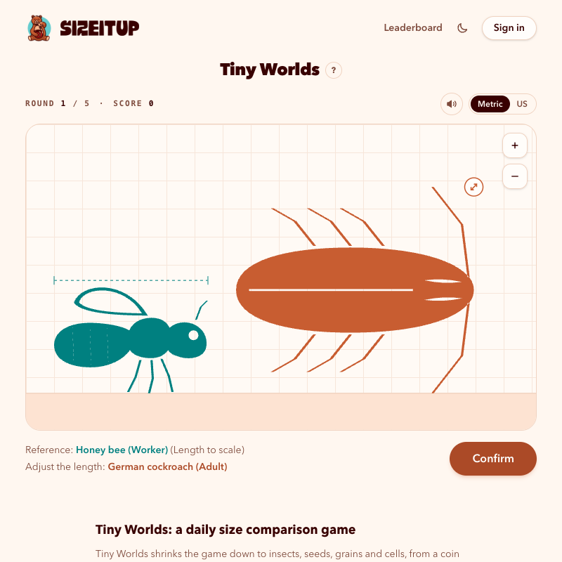

How good is your sense of scale?
SizeItUp: the free daily size comparison game
SizeItUp (also written Size It Up) is a free daily size comparison game in your browser. Each round draws a familiar object at its real size; you stretch a second one until it looks right beside it, then see the true size, where the number comes from and a score out of 100. No download and no ads.
Play today's puzzles at sizeitup.us →How to play
- The teal object is drawn at its real size. It's your reference and never changes.
- Stretch the orange object (drag the corner handle, pinch, or use the arrow keys) until it looks the right size beside the teal one.
- Confirm to reveal the true size, a fact about the object and a link to the source of the measurement.
- Each round scores up to 100 points, so a day of five rounds is worth up to 500.
Five daily games
A new numbered puzzle comes out for every game at midnight in your own timezone, five rounds each.
| Game | What you compare |
|---|---|
| Classic | 39 everyday objects, from a dime to the Burj Khalifa |
| Cosmic Scale | 39 planets, moons, stars, asteroids, canyons, mountains and spacecraft |
| Prehistoric Giants | 31 dinosaurs and extinct giants beside today's animals |
| Kitchen Table | 31 foods and kitchen things, from a peppercorn to a kitchen island |
| Tiny Worlds | 32 small things, from a 1-yen coin down to an E. coli bacterium |



More ways to play
- Daily leaderboard: today's top players and scores for each game.
- Free play: endless unranked rounds from every game.
- Archive: replay any past daily puzzle.
- How big is it?: the sourced size of all 172 objects, smallest to largest.
Size trivia: 40 questions with answers
Every number comes from SizeItUp's sourced data. Try answering before you open each one.
Classic Play Classic →
How tall is the Eiffel Tower?
330 m including its antennas. It was 312 m tall when it opened.
Eiffel Tower on SizeItUp · source: toureiffel.paris
How many credit cards, laid end to end along their long side, would span the mouth of a full-size football goal?
About 86. The goal is 7.32 m between the posts, and a credit card is 85.60 mm wide.
Football goal on SizeItUp · source: theifab.com
Credit card on SizeItUp · source: iso.org
How many Statues of Liberty (statue only, no pedestal) would you stack to reach the top of the Burj Khalifa?
About 18. The statue is 46 m to the torch; the Burj Khalifa is 828 m to the top of its spire.
Burj Khalifa on SizeItUp · source: burjkhalifa.ae
Statue of Liberty on SizeItUp · source: nps.gov
Which coin is smaller across: a US dime or a US penny?
The dime. It's 17.91 mm across, smaller than the penny (19.05 mm), even though it's worth ten times as much.
Dime on SizeItUp · source: usmint.gov
Penny on SizeItUp · source: usmint.gov
How many times wider is a golf hole than a golf ball?
About 2.5 times. The hole is 108 mm (4¼ in) across and the ball 42.67 mm.
Golf hole on SizeItUp · source: assets.randa.org
Golf ball on SizeItUp · source: usga.org
Which is taller: the Great Pyramid of Giza today, or the Washington Monument?
The Washington Monument, at 169.05 m. The Great Pyramid is about 137.5 m today (about 146.5 m when it was finished).
Washington Monument on SizeItUp · source: ngs.noaa.gov
Great Pyramid of Giza on SizeItUp · source: guinnessworldrecords.com
How many FIBA basketball courts, end to end, fit along an NFL field including both end zones?
About 3.9. The NFL field is 109.7 m (360 ft) long and a FIBA court is 28 m.
American football field on SizeItUp · source: static.www.nfl.com
Basketball court on SizeItUp · source: assets.fiba.basketball
How tall is the Leaning Tower of Pisa compared with the Statue of Liberty (statue only)?
They're close: the tower is about 56 m tall above the ground, the statue 46 m to the torch. The tower is about 1.2 times as tall.
Leaning Tower of Pisa on SizeItUp · source: turismo.pisa.it
Statue of Liberty on SizeItUp · source: nps.gov
Cosmic Scale Play Cosmic Scale →
How many Earths would fit side by side across Jupiter?
About 11. Jupiter is 142,984 km across at the equator; Earth is 12,756 km.
Jupiter on SizeItUp · source: nssdc.gsfc.nasa.gov
Earth on SizeItUp · source: nssdc.gsfc.nasa.gov
How many Earths would fit across the Sun?
About 109. The Sun is about 1.39 million km across.
The Sun on SizeItUp · source: nssdc.gsfc.nasa.gov
Earth on SizeItUp · source: nssdc.gsfc.nasa.gov
Which is bigger: the planet Mercury or Jupiter's moon Ganymede?
Ganymede. At 5,262 km across it's the largest moon in the Solar System and wider than Mercury (4,879 km).
Ganymede on SizeItUp · source: nssdc.gsfc.nasa.gov
Mercury on SizeItUp · source: nssdc.gsfc.nasa.gov
How many Mount Everests tall is Olympus Mons on Mars?
About 2.4. Olympus Mons rises about 21.2 km above the Mars reference level; Everest is 8,848.86 m above sea level.
Olympus Mons on SizeItUp · source: ntrs.nasa.gov
Mount Everest on SizeItUp · source: aljazeera.com
Is Pluto bigger or smaller than our Moon?
Smaller. Pluto is 2,376 km across and the Moon 3,475 km.
Pluto on SizeItUp · source: nssdc.gsfc.nasa.gov
The Moon on SizeItUp · source: nssdc.gsfc.nasa.gov
Which is taller: SpaceX's Starship (full stack) or the Saturn V Moon rocket?
Starship, at 124 m (407 ft). The Saturn V was 111 m (363 ft).
Starship on SizeItUp · source: spacex.com
Saturn V on SizeItUp · source: nasa.gov
How does the International Space Station compare with an American football field?
About the same length. The ISS is 109 m end to end; an NFL field with both end zones is 109.7 m.
International Space Station on SizeItUp · source: nasa.gov
American football field on SizeItUp · source: static.www.nfl.com
How many Grand Canyons long is Valles Marineris on Mars?
About 8.7. Valles Marineris runs about 3,870 km, as far as New York to Los Angeles; the Grand Canyon is 446 km long.
Valles Marineris on SizeItUp · source: science.nasa.gov
Grand Canyon on SizeItUp · source: nps.gov
How big is the asteroid Bennu?
About 484 m across, a little taller than the Empire State Building.
Bennu on SizeItUp · source: ssd.jpl.nasa.gov
Empire State Building on SizeItUp · source: esbnyc.com
Prehistoric Giants Play Prehistoric Giants →
How many average US men, lying head to toe, would match the length of SUE the T. rex?
About 7.1. SUE is 12.3 m (40.5 ft) long; the average US man is 175 cm tall.
Tyrannosaurus rex on SizeItUp · source: fieldmuseum.org
Adult man on SizeItUp · source: cdc.gov
How many times taller is the Giraffatitan skeleton in Berlin than a tall male giraffe?
About 2.4 times. The Berlin skeleton stands 13.27 m tall, the tallest mounted dinosaur in the world; tall male giraffes reach 5.5 m.
Giraffatitan on SizeItUp · source: guinnessworldrecords.com
Giraffe on SizeItUp · source: animals.sandiegozoo.org
How many wandering albatrosses' wingspans make one Quetzalcoatlus wingspan?
About 3.5. Quetzalcoatlus spanned an estimated 10 to 11 m; the albatross spans 2.5 to 3.5 m.
Quetzalcoatlus on SizeItUp · source: journals.plos.org
Wandering albatross on SizeItUp · source: nhm.ac.uk
Was Velociraptor bigger than a person?
Not really. It was about 1.8 m from nose to tail, much of it tail, close to the 175 cm average height of a US man.
Velociraptor on SizeItUp · source: nhm.ac.uk
Adult man on SizeItUp · source: cdc.gov
How much longer was Titanoboa than the longest reticulated python on record?
About 1.7 times as long. Titanoboa is estimated at 13 m from its fossil vertebrae; the record python, Medusa, measured 7.67 m in 2011.
Titanoboa on SizeItUp · source: pubmed.ncbi.nlm.nih.gov
Reticulated python on SizeItUp · source: guinnessworldrecords.com
Which is longer: a large blue whale or Dippy the Diplodocus?
The blue whale, just. Large adults reach about 27 m; Dippy is 26 m from head to tail.
Blue whale on SizeItUp · source: peerj.com
Diplodocus on SizeItUp · source: nhm.ac.uk
Was the saber-toothed cat bigger than a lion?
Shorter, at least. Smilodon fatalis stood about 1 m at the shoulder; an adult male lion averages 1.2 m.
Saber-toothed cat on SizeItUp · source: sdnhm.org
Lion on SizeItUp · source: animaldiversity.org
Was a woolly mammoth taller than an African elephant?
No, a little shorter. An adult male mammoth averaged about 2.8 m at the shoulder; an adult male African bush elephant averages 3.2 m.
Woolly mammoth on SizeItUp · source: app.pan.pl
African bush elephant on SizeItUp · source: app.pan.pl
Kitchen Table Play Kitchen Table →
How many long grains of rice, end to end, make up the length of a baguette?
About 73. A milled long grain is 7.15 mm long; a contest baguette is 50 to 55 cm.
Baguette on SizeItUp · source: presse.paris.fr
Grain of rice on SizeItUp · source: aaes.uada.edu
How big is a Neapolitan pizza supposed to be?
Between 22 and 35 cm across: that's what the AVPN's rules for true Neapolitan pizza allow.
How many peppercorns would line up along one roasted coffee bean?
About 2.1. A black peppercorn is about 4.9 mm across; an arabica coffee bean is about 1 cm long.
Coffee bean on SizeItUp · source: iopscience.iop.org
Black peppercorn on SizeItUp · source: updatepublishing.com
How many times taller is a 750 ml wine bottle than a 12 oz soda can?
About 2.5 times. The bottle is 30 cm tall; the can is 122 mm.
Wine bottle on SizeItUp · source: saverglass.com
Soda can on SizeItUp · source: crowncork.com
How many sugar cubes, lined up, would span a 10½-inch dinner plate?
About 17. A sugar cube is 16 by 16 by 11 mm; the plate is 26.7 cm across.
Dinner plate on SizeItUp · source: fiestafactorydirect.com
Sugar cube on SizeItUp · source: dpma.de
How tall is a typical kitchen table compared with a kitchen island?
A table is 75 cm tall; an island is 90 cm to the worktop, 15 cm higher.
Kitchen table on SizeItUp · source: ikea.com
Kitchen island on SizeItUp · source: ikea.com
How many almonds long is a pair of chopsticks?
About 9.9. Chopsticks are 24 cm long; a Nonpareil almond kernel is about 2.4 cm.
Chopsticks on SizeItUp · source: ikea.com
Almond on SizeItUp · source: ijabe.org
Tiny Worlds Play Tiny Worlds →
How many red blood cells would fit across the width of a human hair?
About 9.1. A hair is 60 to 80 µm thick; a red blood cell is about 7.7 µm across.
Human hair on SizeItUp · source: bionumbers.hms.harvard.edu
Red blood cell on SizeItUp · source: peir.path.uab.edu
How many E. coli bacteria, end to end, would span the width of a human hair?
About 35. An E. coli bacterium is about 2 µm long.
Human hair on SizeItUp · source: bionumbers.hms.harvard.edu
E. coli bacterium on SizeItUp · source: doi.org
How big is a tardigrade (water bear)?
About 0.25 mm long. That's smaller than a medium grain of sand, which is 0.25 to 0.5 mm across.
Tardigrade on SizeItUp · source: par.nsf.gov
Grain of sand on SizeItUp · source: apps.usgs.gov
Which coin weighs exactly 1 gram?
Japan's 1-yen coin. It's 20 mm across.
1-yen coin on SizeItUp · source: mint.go.jp
How big is a deer tick nymph?
About 1.5 mm, the size of a poppy seed.
Deer tick on SizeItUp · source: cfaes.osu.edu
Poppy seed on SizeItUp · source: europepmc.org
Can you see a human egg cell without a microscope?
Just about. It's 110 to 120 µm across, right at the limit of what the eye can see.
Human egg cell on SizeItUp · source: europepmc.org
How many medium grains of sand would fit across a 1 euro cent coin?
About 43. The coin is 16.25 mm across; a medium sand grain is 0.25 to 0.5 mm.
1 euro cent coin on SizeItUp · source: ecb.europa.eu
Grain of sand on SizeItUp · source: apps.usgs.gov
Which is longer: a seven-spot ladybug or a honey bee worker?
The honey bee, at 10 to 15 mm. A seven-spot ladybug is 5 to 8 mm.
Honey bee on SizeItUp · source: idtools.org
Ladybug on SizeItUp · source: europepmc.org